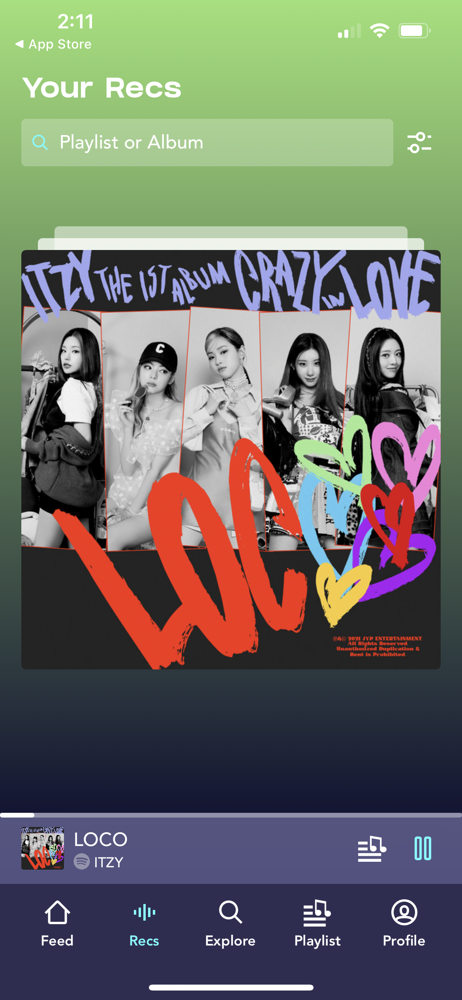
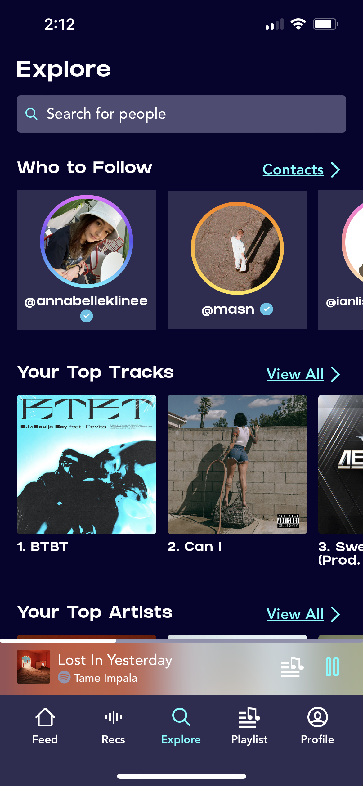
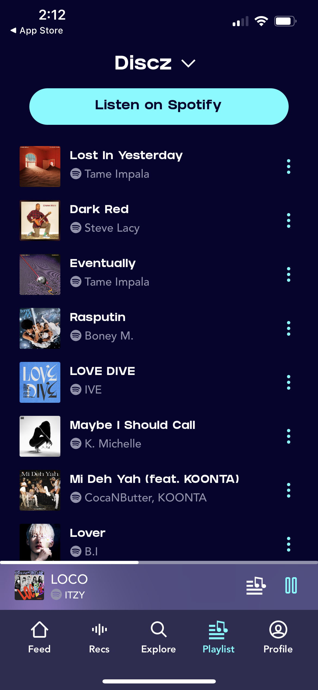
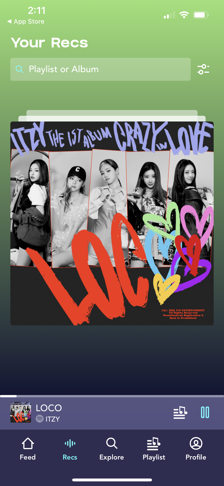
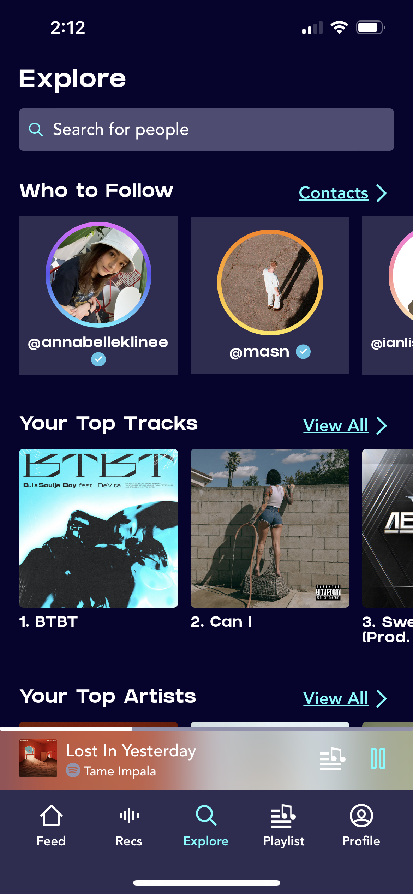
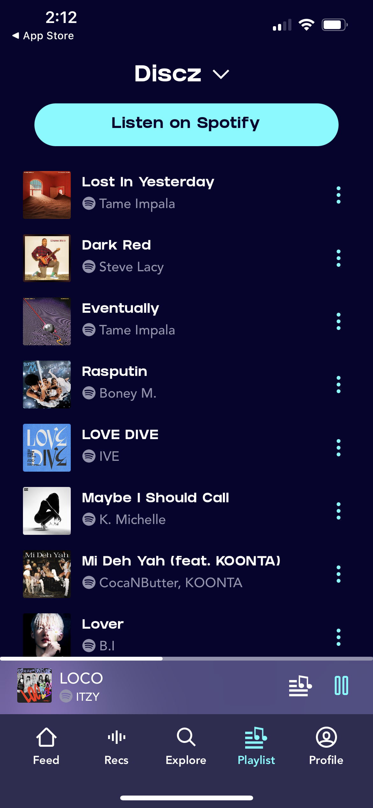

Overview
My Role
UX Designer
UX Researcher
Timeline
October 25 - November 9
Team
4 Students
Tools
HTML/CSS, JavaScript, Balsamiq, Figma, Teamwork
Problem
Context
In this project, my team viewed the start-up Discz, the hottest new social media and music app. As a team, we designed a new interactive solution to their current application released on the Apple App store in a more intuitive and user-focused way to make the start-up more successful. As a UX Designer and Researcher team, we were able to redesign and gather feedback from users on our high fidelity prototype.
Why?
In our team's experience using the application, we had a few issues with the app that we wanted to fix in the new design. With the application UX, users are unable to make multiple playlists depending on the genre. We found this difficult as most users have varying genre tastes and one playlist to encompass it all may not be the best playlist to listen to. With UX, we also found the swiping action confusing. There is no indication as to which side is needed to swipe and like or dislike the song. With the application UI, we had issues with the navigation bar and the profile page.
Research
Start-up
Discz was founded in 2021 by Bobby Pinckney and Michelle Yin. They joined Y combinator in the Winter of 2022. The core conecpt behind Discz is that it is a Spotify-integrated music discovery platform built to help users find their next favorite artists and songs. The main functionality is the ability to build playlists at the swipe of a finger and find new music via custom recommendations catered to user tastes! Users can swipe through song snippets to find music they love and add it to their spotify playlists. Since launching in March, Discz has consistently ranked top 10 in the App Store music charts with over 300,000 monthly active users and 3 million song saves per week.
Current Application Design
Before starting our redesign, we downloaded the current Discz application to test the product. Here is where we found the user problems we described above. Here are some screenshots from the current UI of the application. The following screens include the Feed page, Recs page, Explore page, and Playlist page.
 





Design Iterations
Low Fidelity Mock-ups
For our low fidelity mock-ups, we had four ideas for what the new design for Discz should look like, covering the major problems outlined above. The four designs were based off of current apps with easy to use user design: TikTok, Pandora, Netflix, and Spotify. The wireframes were designed in Balsamiq.
For the final wireframe, we combined the design of Spotify, Tinder, and Instagram, in a simplified way for the new Discz design. In our designs, we covered what the three major nagivations tabs would be: Discover, Playlist, and Profile. Our Profile page is similar to Instagram while the Playlist and Discover pages are simplified versions of Spotify. Finally, the swiping action to like and dislike songs is inspired by Tinder's simple UI style. These can be viewed in our final project page linked in the button below. s
High Fidelity Mock-ups
The final high fidelity mock-up was developed in Figma. In this mock-up, the overall design and UI was decided and design. We also made our Figma prototype clickable allowing users to experience using the application and its features such as swiping on songs or viewing their profile.
An additional change we made is in the color scheme and logo of Discz. The color scheme of the original app is too excessive. Therefore, we simplified colors to be teal, black and white. The logo shape is kept, but with a single color instead of an ombre and in the 2D plane.
Final Project Page
Select the button below to view the project with details and mock-ups explained in previous sections. Please keep in mind this button re-routes to a different webpage so please direct yourself back to this page using the back button on your browser to come back to this portfolio webpage.
UX Feedback
Student Critiques
As a group, we gathered critiques from fellow students on our initial Discz design. Using their critiques, we made changes to our high-fidelity model. We gained useful positive and constructive feedback. For example students enjoyed our new color scheme for the application and the clean UI. On the other hand, they found some of our buttons unintuitive such as the "+" button we had in the Discover page.
UserTesting
What is UserTesting?
UserTesting is an online resource for UX designers to test their designs to anonymous individuals around the world. Individuals sign-up and are paid to user test a variety of designs, prototypes, and softwares made by developers. Our team used UserTesting in order to test our final version of the high fidelity Figma mock-up. We were reviewed by four individuals. Each of their experiences using our mock-up were screen recorded.
Testing Process
We asked users to complete four tasks. In these tasks, they needed to interact with the prototype in a certain way and in a specific order. Once they completed a task, we asked additional questions for them to describe the experience on each page and whether or not they were intuitive or difficult to understand.
Testing Results
In our testing results, we found users had an overall positive experience with the app and found it to be intuitive. We found users had some issues with our swipping functionality in the Discover section. They were also unclear about how to create new radios. There was an average intuitivity score of 4.5 for all three major pages.
Conclusion
Insights
In this project, I learned the importance of gathering detailed feedback. Simply assuming certain aspects of a product design is clear or only focusing on UI is not enough. Instead, as a UI/UX Designer, every aspect of design must be considered. The best way to get clear feedback on design assumptions and descisions is to talk to users and listen, taking their feedback and making the necessary changes.
Takeaways
A takeaway from this project is the usefulness of tools like UserTesting on the Internet. User testing of any form is extremely useful in ensuring your design is intuitive and understandable to the average user. If not, a product will not succesful reach the needs of a user.